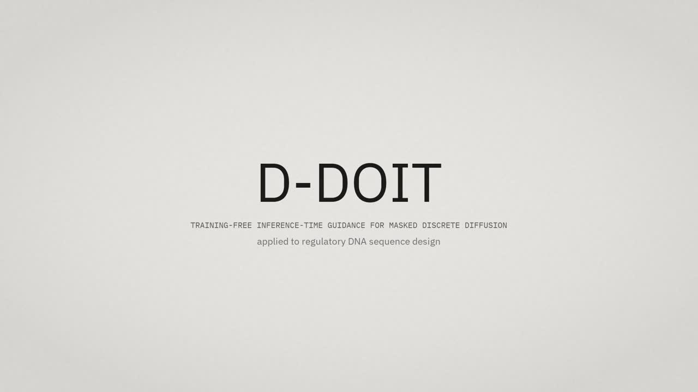
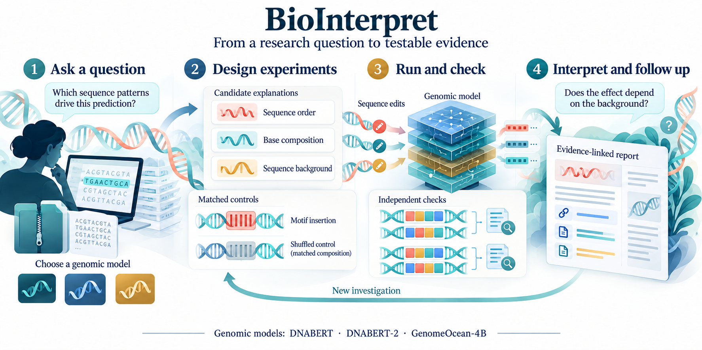

Ideas · Experiments · Research notes
Blog.
What we are building, what the experiments show, and the questions that come next.

October 22, 2026 · D-DOIT · Film
How black-box rewards steer discrete diffusion toward useful DNA and protein sequences, without retraining. Includes our 68-second research film.
Read the story & watch the film →
October 22, 2026 · BioInterpret
Testing what genomic models have learned with an AI research assistant, controlled sequence edits, and evidence-linked reports.
Read the story →